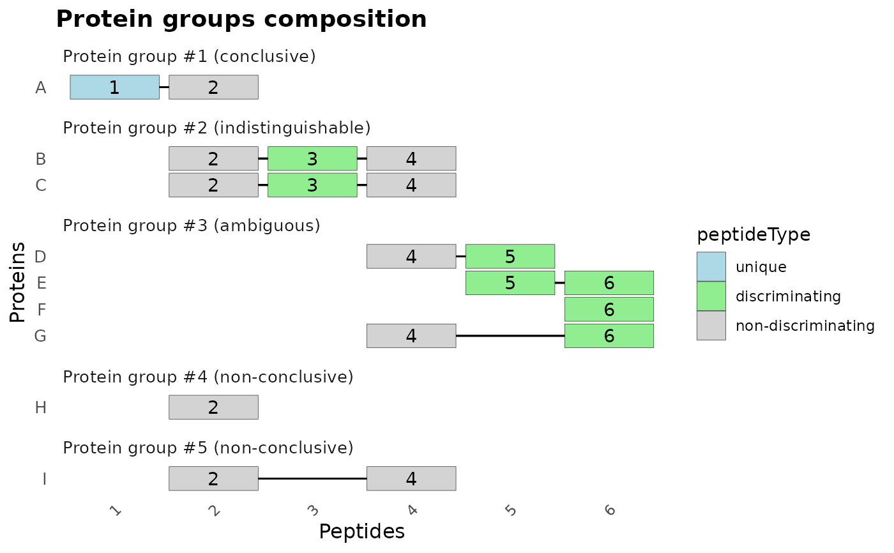

Plot Protein Groups Composition
plot_groups.RdVisualizes the composition of selected protein groups based on their associated peptides. The function filters the specified protein groups, arranges them, and displays a plot showing the peptides associated with each protein in the group. Peptides are colored according to their classification as unique, discriminating, non-discriminating, or non-significant.
See also
PAnalyzer: A software tool for protein inference in shotgun proteomics for an example plot.
Examples
data(example_panalyzer, package = "b10prot")
plot_groups(example_panalyzer, groupRefs = 1:5)
